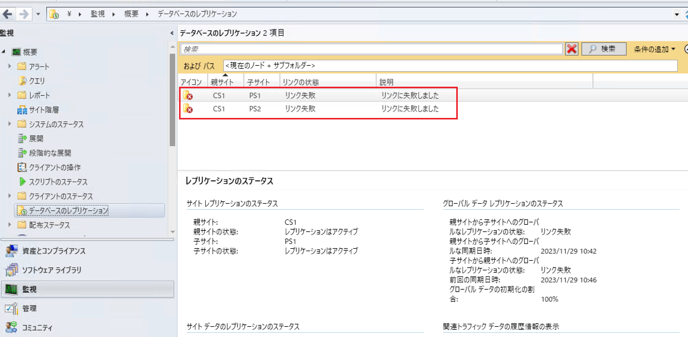

データベース レプリケーション問題発生時の情報採取手順について
中央管理サイトとプライマリ サイト間で、データベース レプリケーションのリンク状態が「失敗」になるなど、レプリケーションの問題が発生した時の情報採取手順です。

作業端末
- 中央管理サイト サーバー
- プライマリ サイト サーバー
- 中央管理サイトのデータベース サーバー
- プライマリ サイトのデータベース サーバー
採取情報
- spDiagDRS 情報
- vLogs 情報
- データベース レプリケーションの送信･受信履歴情報
- レプリケーション データの初期化ステータス情報
- Configuration Manager サーバー情報
採取手順
spDiagDRS 情報
作業場所 : 中央管理サイトのデータベース サーバー、プライマリ サイトのデータベース サーバー
SQL Query 結果の出力方法について - 採取手順 (RPT 形式で出力) の手順で、以下のクエリの実行結果の採取をお願いします。
vLogs 情報
作業場所 : 中央管理サイトのデータベース サーバー、プライマリ サイトのデータベース サーバー
SQL Query 結果の出力方法について - 採取手順 (CSV 形式で出力) の手順で、以下のクエリの実行結果の採取をお願いします。
YYYY-MM-DD の部分は問題が発生した日付に置換してください。
1
2
3
4
| DECLARE @Now DATETIME = 'YYYY-MM-DD'
DECLARE @Last7Days DATETIME = DATEADD(day, -7, @Now)
select LogLine, LogText, LogTime, ComponentName, MachineName, ProcedureName from vLogs where LogTime >= @Last7Days and LogText not like '%not sending changes%' and logtext not like '%no changes detected%' order by Logtime desc
|
データベース レプリケーションの送信･受信履歴情報
作業場所 : 中央管理サイトのデータベース サーバー、プライマリ サイトのデータベース サーバー
SQL Query 結果の出力方法について - 採取手順 (CSV 形式で出力) の手順で、以下のクエリの実行結果の採取をお願いします。
YYYY-MM-DD の部分は問題が発生した日付に置換してください。
1
2
3
4
5
| DECLARE @Now DATETIME = 'YYYY-MM-DD'
DECLARE @Last7Days DATETIME = DATEADD(day, -7, @Now)
select * from DRSReceiveHistory where ProcessedTime >= @Last7Days order by ProcessedTime desc
select * from DrsSendHistory where ProcessedTime >= @Last7Days order by ProcessedTime desc
|
データベース レプリケーションの送信･受信履歴情報
作業場所 : 中央管理サイトのデータベース サーバー、プライマリ サイトのデータベース サーバー
SQL Query 結果の出力方法について - 採取手順 (CSV 形式で出力) の手順で、以下のクエリの実行結果の採取をお願いします。
YYYY-MM-DD の部分は問題が発生した日付に置換してください。
1
2
3
4
5
| DECLARE @Now DATETIME = 'YYYY-MM-DD'
DECLARE @Last7Days DATETIME = DATEADD(day, -7, @Now)
select * from DRSReceiveHistory where ProcessedTime >= @Last7Days order by ProcessedTime desc
select * from DrsSendHistory where ProcessedTime >= @Last7Days order by ProcessedTime desc
|
レプリケーション データの初期化ステータス情報
作業場所 : 中央管理サイトのデータベース サーバー、プライマリ サイトのデータベース サーバー
SQL Query 結果の出力方法について - 採取手順 (CSV 形式で出力) の手順で、以下のクエリの実行結果の採取をお願いします。
1
2
| select * from RCM_DrsInitializationTracking
select rd.ReplicationPattern, rd.ReplicationGroup, ad.* from ArticleData ad join ReplicationData rd on ad.ReplicationID = rd.ID order by rd.ReplicationGroup, ad.ArticleName
|
Configuration Manager サーバー情報
作業場所 : 中央管理サイト サーバー、プライマリ サイト サーバー、中央管理サイトのデータベース サーバー、プライマリ サイトのデータベース サーバー
Configuration Manager および WSUS 初期調査に必要な資料採取手順について の手順で、情報採取をお願いします。
スクリプトによる情報採取ができない場合は、Configuration Manager サーバー資料の採取手順 (手動) の手順で、情報採取をお願いします。